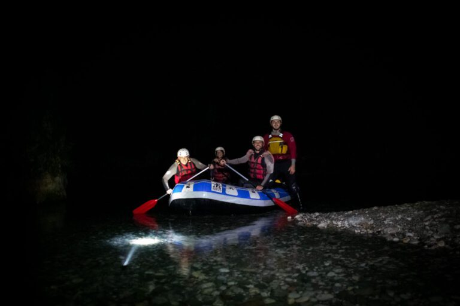
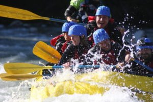
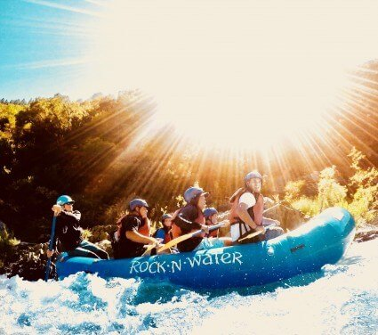

Plans
Sunrise rafting
5:30AM
Twilight rafting
7:00PM
Midnight rafting
10:00PM
Contact Us!
Midnight rafting 10:00PM
Begin your day with the tranquil beauty of nature as you embark on a serene rafting journey at the break of dawn. Glide along the gentle currents while the first light of sunrise bathes the landscape in a golden hue. Perfect for early risers seeking a peaceful start to their day amidst the soothing sounds of flowing water and chirping birds.
Twilight rafting 7:00PM
Experience the thrill of navigating through the rapids under the mesmerizing hues of twilight. As the sun dips below the horizon, embark on an adrenaline-pumping adventure along the river. Feel the rush of excitement as you tackle challenging currents illuminated by the soft glow of dusk. Ideal for thrill-seekers craving an exhilarating evening escapade.
Sunrise rafting 5:30AM
Embark on a magical rafting journey under the enchanting light of the moon. Glide through the tranquil waters as moonbeams dance on the surface, casting an ethereal glow over the surrounding wilderness. Immerse yourself in the serene ambiance of the night, with only the gentle rustle of the breeze and the occasional nocturnal wildlife adding to the enchantment. Perfect for those seeking a unique and enchanting nighttime adventure.